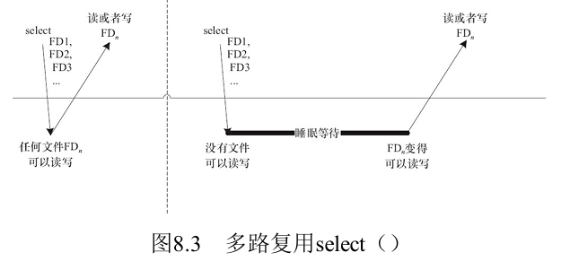

03 文件IO
文件IO
Linux下，一切皆文件。这句话指的是，Linux系统中，将对所有输入/输出资源（文件、管道、Socket、硬件设备）的操作都抽象成了对文件的操作。所以学习文件I/O的相关API很重要
1.文件描述符
在Linux系统中，使用open()系统调用打开一个I/O资源后，会返回一个非负整数，这个非负整数就是==文件描述符==fd。后续所有的对于该资源的操作，都需要这个文件描述符。
这里我使用I/O资源而不是文件，因为打开像
socket这样的资源时，并不是真的打开了一个文件，但是也会返回一个文件描述符。
Linux内核中，对每一个进程都维护一个打开文件表（
struct file的数组），fd其实就是数组中的一个idx文件描述符的0,1,2通常默认就被占用了，其中0为系统标准输入（键盘）、1为系统标准输出（显示器）、2为系统标注错误。
2.Linux文件相关的系统调用
以下的系统调用虽然接口是固定的，但是实际作用会根据文件类型的不同而不同！！！
2.1打开文件
Linux中要操作一个文件，首先需要打开该文件，通常使用open()系统调用
1 |
|
- flags：打开文件时的一些权限，比如可读/可写之类的
- mode：创建文件时，给该文件设置用户权限
如果打开成功，将返回文件描述符，失败则返回-1
使用
open()打开一个磁盘中的一个文件（静态文件）时，会将该文件的数据全部拷贝到内存中（动态文件），接下来对其的修改都是在内存中进行的。然后在改动完成保存时，再一次性将所有数据写入硬盘。这样做的好处是：在内存中能够以字节为单位操纵这些数据，而在磁盘这种块设备中，只能以块为单位进行读写，且内存的访问速度更快。
2.2写文件
使用write()系统调用可以对打开的文件写入数据
1 |
|
2.3读文件
使用read()系统调用可以对打开的文件读出数据
1 |
|
2.4关闭文件
使用close()系统调用可以对关闭打开的文件
1 |
|
在Linux中，关闭一个进程时，内核会自动关闭所有该进程打开的文件，也就是说可以不用显式的通过close()关闭文件，但最好还是显式关闭。
2.5设置位置偏移
对于每个打开的文件，系统会记录它的读写位置偏移，这样每次才能在想要的位置上读写数据。通过lseek()系统调用可以设置位置偏移
1 |
|
2.6操作已打开的文件描述符
fcntl系统调用类似一个对于文件描述符的杂项工具箱，根据输入的指令不同，它可以对文件描述符做一系列的操作
1 |
|
cmd：操作命令。此参数表示我们将要对 fd 进行什么操作，cmd 操作命令大致可以分为以下 5 种功能：
- 复制文件描述符（cmd=F_DUPFD 或 cmd=F_DUPFD_CLOEXEC）；
- 获取/设置文件描述符标志（cmd=F_GETFD 或 cmd=F_SETFD）；
- 获取/设置文件状态标志（cmd=F_GETFL 或 cmd=F_SETFL）；
- 获取/设置异步 IO 所有权（cmd=F_GETOWN 或 cmd=F_SETOWN）；
- 获取/设置记录锁（cmd=F_GETLK 或 cmd=F_SETLK）；
2.7杂项IO操作
ioctl系统调用类似一个对于文件的杂项工具箱，根据输入的指令不同，它可以对文件描述符做一系列的操作，一般用于操作硬件外设
1 |
|
函数参数和返回值含义如下：
- fd：文件描述符。
- request：此参数与具体要操作的对象有关，没有统一值，表示向文件描述符请求相应的操作；后面用到的时候再给大家介绍。
- …：此函数是一个可变参函数，第三个参数需要根据 request 参数来决定，配合 request 来使用。
3.标准I/O库
上面所讲的文件I/O都属于Linux系统的系统调用，==无法跨OS使用==，因此如果要编写跨平台的I/O代码，需要使用标准I/O库。
标准I/O库也就是stdio.h，其中定义了fopen(),fread()等API，Linux系统下其内部还是使用了open()，read()等系统调用。且标准I/O中在用户空间维护了一个自己的缓冲区，性能优于文件I/O库。但是正是因为存在缓冲区，I/O操作不能像系统调用后立即生效，只有把缓冲区给flush时，修改才会真正生效
3.1FILE指针
在文件I/O中，通常使用文件描述符来描述一个文件以及对其进行操作，而在标准I/O中，使用FILE指针来指向一个文件，并对其进行后续操作。FILE指针内部包含了文件描述符、指向该文件缓冲区的指针、缓冲区长度等信息。
3.2标准输入、输出、错误
标准输入、输出、错误值的是计算机的一些设备，比如键盘、显示器等，用于输入数据和显示。由于Linux下，设备使用/dev下的文件来表示，因此对于这些设备的I/O操作，也需要使用文件描述符或者FILE指针。
当使用printf()时，实际上就是把格式化字符输出到标准输出，这样显示器上就能够显示出要显示的内容了
4.I/O缓冲
出于速度和效率的考虑，操作==普通文件==时（非设备文件）系统调用的I/O库和标准I/O库都不会直接访问存储设备，而仅仅在用户空间缓冲区和内核缓冲区之间复制数据。但是操作设备文件时，一般不经过内核缓冲区
比如调用write()会把数据写入到内核缓冲区，然后此函数就返回了，内核会在某个时刻将缓冲区内的数据一次性写入到磁盘中。因此这个函数和磁盘操作不是同步的。这样做是为了提高效率，因为往磁盘中写入文件很耗时，一次性多写入一些可以节省时间。
4.1刷新I/O的内核缓冲区
有的时候，需要强制将文件I/O的内核缓冲区的数据写入（刷新）到磁盘设备中，比如把东西拷贝到U盘后，拔下来之前如果内核没有把缓冲区的数据真正写入U盘，那么数据会丢失。Linux提供了许多可以控制文件I/O内核缓冲区的系统调用：sync()，syncfs()，fsync()以及fdatasync()
4.2直接I/O
Linux系统中，可以跳过I/O内核缓冲区，每次都直接将数据写入磁盘，只需要在打开文件时设置一下：
1 | fd = open(filepath, O_WRONLY | O_DIRECT); |
4.3标准I/O的缓冲
文件I/O只有一个内核缓冲区，而标准I/O在用户空间也维护了一个缓冲区，以减少系统调用的次数。文件I/O首先将数据都写入用户空间的stdio缓冲区，接着一次性把数据写入内核的缓冲区，再由内核把内核缓冲区的数据写入硬盘。通过这样的操作，使其性能得到进一步地提升。
缓冲方式有一下三种：
- 行缓冲：只有遇到
'\n'时才会把缓冲区的数据刷新到内核缓冲区 - 全缓冲：只有
stdio缓冲区满了才会把数据刷新到内核缓冲区 - 无缓冲：不使用
stdio缓冲区
不论采用何种缓冲方式，可以使用fflush()系统调用直接将stdio缓冲区的数据刷新到内核缓冲区。除此之外，在文件关闭或进程结束时，stdio缓冲区也会自动被刷新.
5.高级I/O
5.1阻塞I/O和非阻塞I/O
I/O操作分为阻塞的和非阻塞的：
- 阻塞I/O：对文件进行读写时，如果文件的数据没有准备好，则该进程进入阻塞态，直到数据准备好
- 非阻塞I/O：对函数调用时会立即返回，如果数据为准备好，则返回错误
对于==普通文件==的读写一定是不会被阻塞的，但是对于==设备文件==或==
socket文件==的读写，则可以阻塞也可非阻塞到底会不会阻塞，与该文件的
file_operations结构体里具体的实现有关！
阻塞I/O的优点：
- 使用阻塞I/O时，如果数据没准备好，操作系统会调度其他进程运行，而非阻塞I/O需要不断轮训直到数据准备好，这将极大的CPU占用率
阻塞I/O的缺点：
- 阻塞I/O无法实现对文件的并发读取，比如同时读鼠标和键盘，除非使用多线程。而非阻塞I/O可以通过轮训的方式实现并发读取，但CPU占用率会很高
5.2I/O多路复用
上面提到的非阻塞I/O虽然可以通过轮训实现并发地I/O操作，但是CPU占用率很高，为解决此问题，操作系统提供了I/O多路复用这一机制，用于同时监控多个fd是否准备就绪，如果未就绪则阻塞该线程
I/O多路复用技术需要使用select()或poll()或epoll()系统调用，都会发生阻塞，但其可以同时监视多个文件描述符，前2个内部实际上也是轮训（时间复杂度为O(n)），但做了优化，所以比自己手动轮训要快一些
select()或poll()或epoll()系统调用虽然会阻塞线程，但是在open()文件描述符本身时，需要非阻塞地打开
fd = open(filename, O_RDWR | O_NONBLOCK);
5.2.1select系统调用

select系统调用的作用是在一段时间内，监听用户感兴趣的一组文件描述符上的可读、可写、异常等事件
1 |
|
readfds是用来检测读是否就绪（是否可读）的文件描述符集合；writefds是用来检测写是否就绪（是否可写）的文件描述符集合；exceptfds是用来检测异常情况是否发生的文件描述符集合
select()函数将阻塞直到有以下事情发生：
readfds、writefds或exceptfds指定的文件描述符中至少有一个称为就绪态；- 进程被信号处理函数给终止
- 参数 timeout 中指定的时间上限已经超时。
select()函数的返回值：
- 返回-1：表示有错误发生，并且会设置 errno。可能的错误码包括 EBADF、 EINTR、 EINVAL、 EINVAL以及 ENOMEM， EBADF 表示 readfds、 writefds 或 exceptfds 中有一个文件描述符是非法的； EINTR表示该函数被信号处理函数中断了，其它错误大家可以自己去看，在 man 手册都有相信的记录。
- 返回 0： 表示在任何文件描述符成为就绪态之前 select()调用已经超时， 在这种情况下， readfds，writefds 以及 exceptfds 所指向的文件描述符集合都会被清空。
- 返回一个正整数：表示有一个或多个文件描述符已达到就绪态。返回值表示处于就绪态的文件描述符的个数，在这种情况下，每个返回的文件描述符集合都需要检查，通过 FD_ISSET()宏进行检查，以此找出发生的 I/O 事件是什么。如果同一个文件描述符在 readfds， writefds 以及 exceptfds 中同时被指定，且它多于多个 I/O 事件都处于就绪态的话，那么就会被统计多次，换句话说，select()返回三个集合中被标记为就绪态的文件描述符的总数
5.2.2poll系统调用
poll系统调用的作用是在指定时间内轮训一定数量的文件描述符，以测试其中是否有就绪者
1 |
|
fds： 指向一个 struct pollfd 类型的数组，数组中的每个元素都会指定一个文件描述符以及该文件描述符所需要检查的事件(读就绪/写就绪/异常)，稍后介绍 struct pollfd 结构体类型。nfds： 参数 nfds 指定了 fds 数组中的元素个数，数据类型 nfds_t 实际为无符号整形
select()和poll()的缺陷：的内部实现还是轮训，因此如果监视的文件描述符过多，效率也会变低
5.2.3epoll系列系统调用
为了解决select()和poll()的缺陷（监听文件多了会变卡），可以使用epoll系列的I/O多路复用的系统调用，其把关注的文件描述符全部注册到内核中的一个红黑树中（好像是），并且采用事件驱动机制，即使监听文件非常多，其效率也不会降低，时间复杂度为O(1)，多用于网络编程这样的高并发场景
5.2.4方式选择
epoll效率最高，是不是无脑用epoll就行了？
- 不是的，
epoll只在Linux平台有，而其他2个在别的平台也有。非高并发场合用selec或者poll就行了
5.3信号驱动的I/O
上面的I/O多路复用实际上也是阻塞式I/O，只不过它能够同时监听多个文件描述符。信号驱动的I/O指定是：应用程序向内核注册一个文件描述符，当该文件描述符可以进行I/O操作时，通过信号（SIGIO）通知该进程，然后由为该信号预先注册的处理函数来完成I/O操作，显然信号驱动式I/O是非阻塞的。
5.4同步I/O和异步I/O
- 同步I/O：对文件描述符的I/O操作都是在应用程序中完成的，内核向用户程序通知的是I/O就绪事件
- 异步I/O：对文件描述符的I/O操作都是由内核完成的，内核向用户程序通知的是I/O完成事件
上面所说的I/O多路复用、轮训、信号驱动I/O都是同步I/O
使用异步I/O时，用户可以直接对文件描述符进行读写操作，这些操作告诉内核缓冲区的位置，以及I/O操作完成后内核通知进程的方式。异步I/O函数总是立即返回，因为真正的读写由内核接管